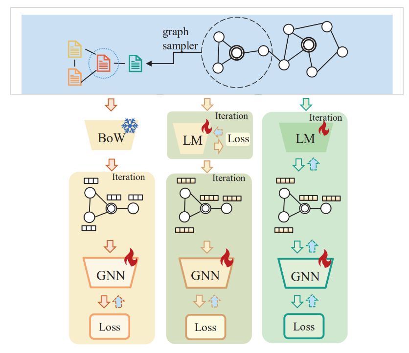
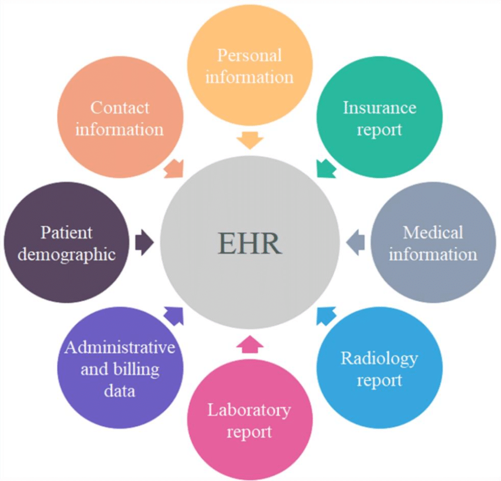
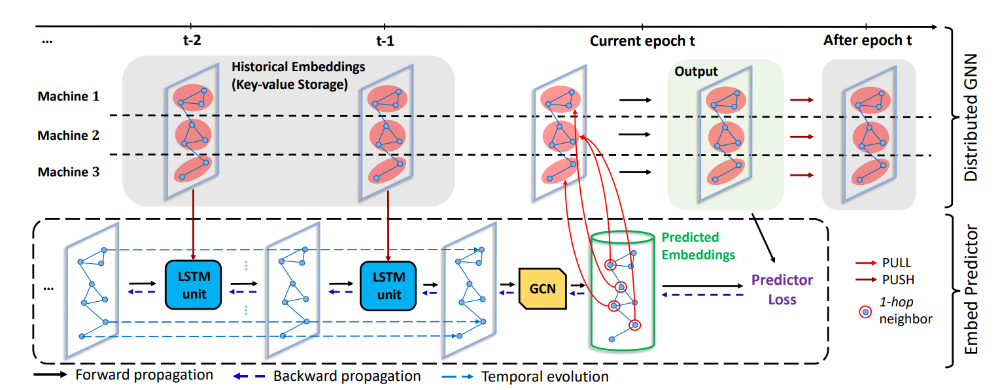
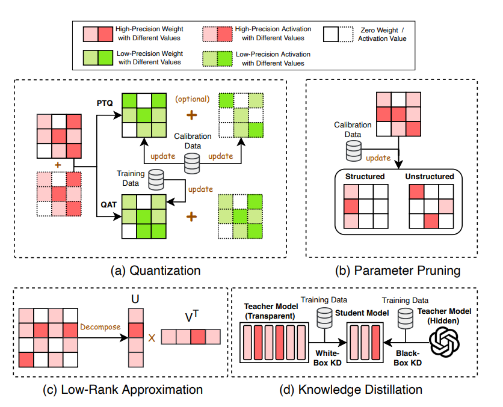

|
I am a graduate student at University of Waterloo. Currently, I am working with Prof. Rex Ying from Yale University, and Prof. Liang Zhao from Emory University. My research interests revolve around machine learning, including text-attributed graph learning and large language models in Healthcare. I am actively looking for Ph.D. positions starting from Fall 2025. Please feel free to reach out if you are interested in collaborating or have any questions.
|
{kind=link}
|
|
|  |
Guangji Bai*, Ziyang Yu*, Yunqian Fan*, Liang Zhao, Yue Cheng In progress Propose a novel co-learning method that utilize large language model to encode text-attributed graph and achieve state-of-the-art performance. |
|  |
Tinglin Huang*, Ziyang Yu*, Rex Ying In progress Propose a novel in-context learning method that utilize large language model to generate discharge summary. |
|  |
Guangji Bai*, Ziyang Yu*, Zheng Chai, Yue Cheng, Liang Zhao Under review PDF / Code Propose a novel and scalable distributed GNN training framework that reduces the embedding staleness adaptively. |
|  |
Guangji Bai, Zheng Chai, Chen Ling, Shiyu Wang, Jiaying Lu, Nan Zhang, Tingwei Shi, Ziyang Yu, Mengdan Zhu, Yifei Zhang, Carl Yang, Yue Cheng, Liang Zhao Under review Make a systematic review of existing works and a highly structured taxonomy of resource-efficient LLMs. |